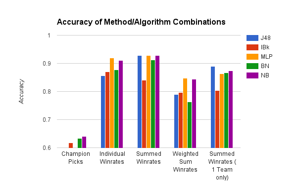

League of Legends Win Predictor
EECS 349- Spring 2015 (Doug Downey)
Team
Overview
League of Legends is an online competitive multiplayer strategy game that pits a team of five players against another team of five players with each player selecting a distinct character, known as a champion, from a pool of currently 124 champions. It is currently the most played online game in the world, with over 7.5 million players concurrently during peak hours.
Our task is to use data given before a match begins, and predict which team will win. This is valuable, because it gives players a tool to analyze whether they should consider leaving (known as dodging) a match before it starts to avoid losing.
Dataset
Using the official League of Legends API, we generated a training set and testing set, each of 300 matches. Information for each match includes the 10 players in the match, the champions which those players are using for the match, and the overall winrate for each player for the champion that they are using.
Procedure
We used 5 methods to analyze the datasets, looking at:
- Champion Picks (no separate training/testing data): 10 attributes for each player from a category of 124)
- Individual Winrates on the current champion: 10 attributes for each player giving the winrate [0, 1.0] that a player has on the specific champion they are playing
- Summed Winrates: Same as above, but 2 attributes with the winrate of team 1 versus team 2
- Summed Winrates with logarithmic weighting based on number games played on champion
- Summed Winrates for one team only
We also tried using the following 5 machine learning algorithms to analyze the data
- J48: Decision Tree
- IBk: Nearest Neighbor
- MLP: Multilayer Perceptron
- NB: Naive Bayes
- BN: Bayes Net
Results
When we initially examined the champion picks, our data indicated that examining those attributes was not that useful with Naive Bayes being the highest at 64%. Our conclusion was that champion picks was not a very useful stat to look at.
Surprisingly, when we looked at individual win rates for each player on the champion they are playing, we found a very significant increase up to 91% on the testing set with Naive Bayes. Intuitively, winrate is a very good predictor for the outcome of a game, because people who tend to win games with a specific champion may have more positive impact on the current game.
However, that left the problem of having 10 distinct attributes for each player, when in reality it does not matter with combination or ordering the players come in. In other words there are 5 players on team 1 and 5 players on team 2, so there should ideally be 2 attributes. In order to solve this, we summed the winrates for team 1 and for team 2. There was not a very large change, resulting in 92.8% on Naive Bayes.
Using the same data above, we also tried weighting the data for an instance logarithmically based on the number of games the player has played on their selected champion. Our reasoning was that players who have more experience with their champion have more impact on the game, and thus should be weighted more in the algorithm. However, it performed much worse with about a 10% reduction in accuracy across the board from the previous dataset.
The problem with the previous models is that determining an instance for those models requires you to know the 10 champion picks for a game, and the match history of all 10 people on those champions. In "champ select" a player only sees the names of the players on their own team, so we tested summing the winrate for the player's own team. The best result on the testing set was J48 decision tree at 89%. Upon investigating the tree in Weka, the decision tree was a single branch deciding whether the attribute was greater than or equal to 260.43 (summed winrates of team in percentages was greater than 250.43%).
Conclusions
It is very easy to predict who is going to win by just summing the champion-specific win rates of players on a champion in game. Looking at champion picks alone will not provide a good predictor, but may be good as additional attributes in classifiers where the extra dimensionality does not hinder it, such as decision trees. This suggests that for most games played, individual skill on a champion is the most important aspect in determining a game's outcome over aspects like team compositions and experience.
Further examinations could be looking at other data such as other game statistics of players on a champion, like gold earned in previous games or the kill/death/assist averages. However, the limitation is that this takes more API calls and significantly longer to process. This also potentially requires classifiers that can handle missing attributes, since the API is more likely to return error response instead of data.